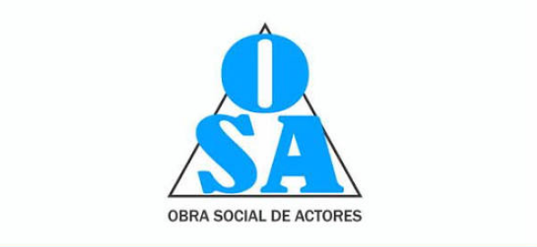
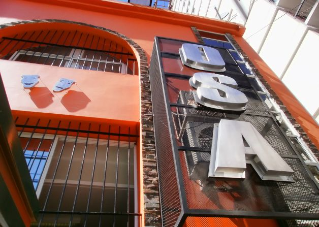

OSA | Mantenimiento informático

Actividad: Brindar cobertura de salud y asistencia médica a los actores, actrices y a sus grupos familiares en Argentina.
Tareas: Mantenimiento de computadoras, instalación de Windows y realización de backups.
Período: Agosto de 2025 - Actualidad.
Ubicación: Ayacucho 537, CABA.
Volver al CV